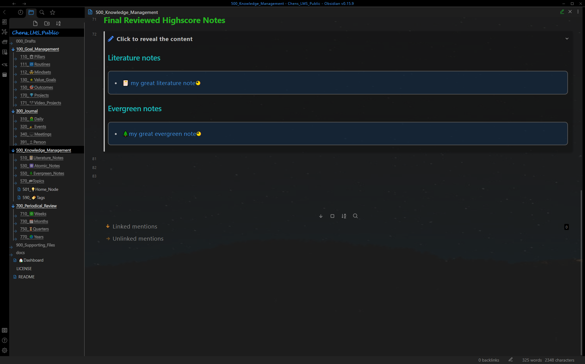
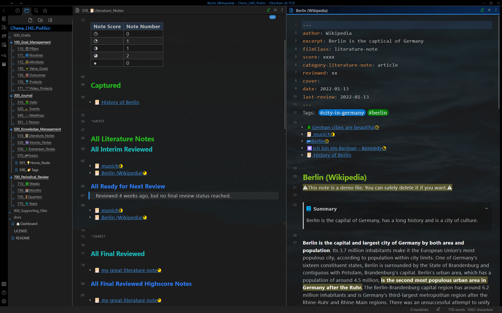
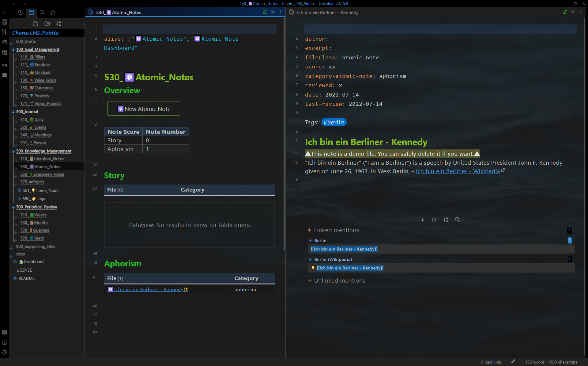
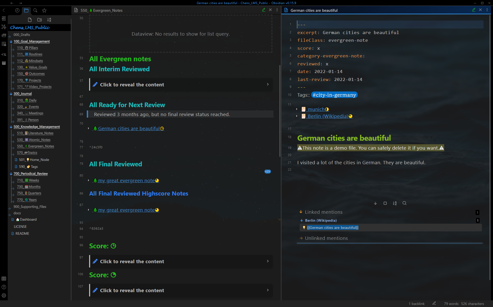
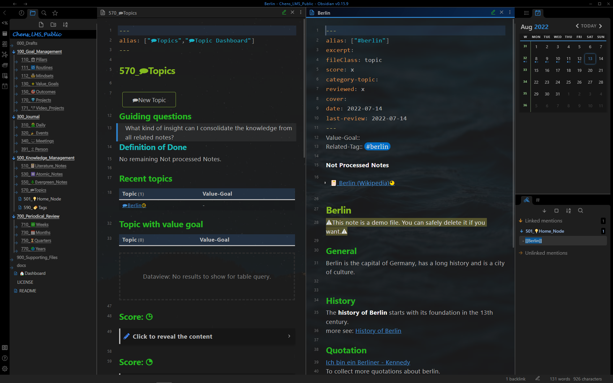
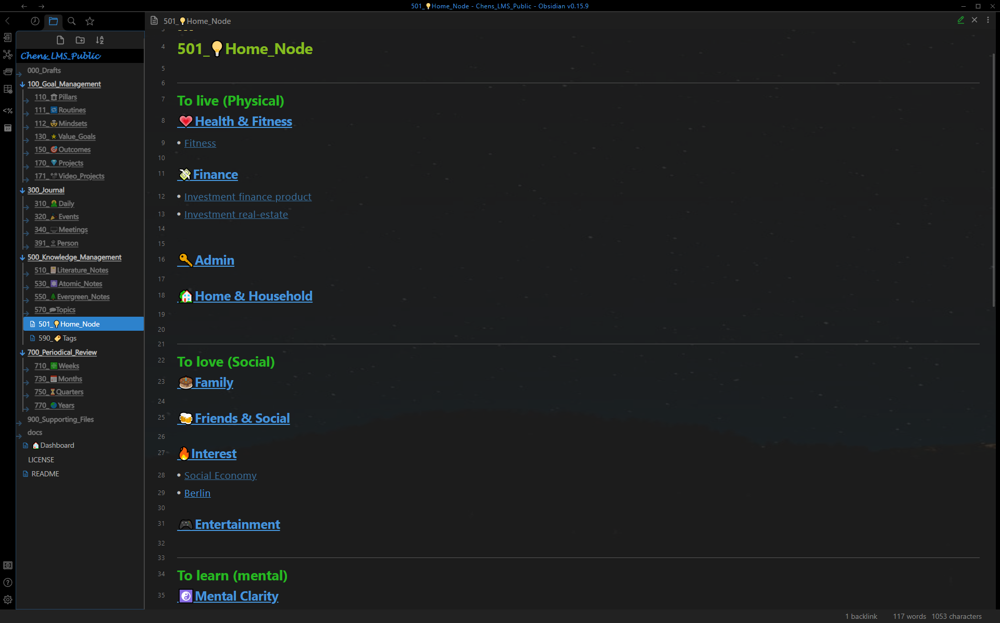
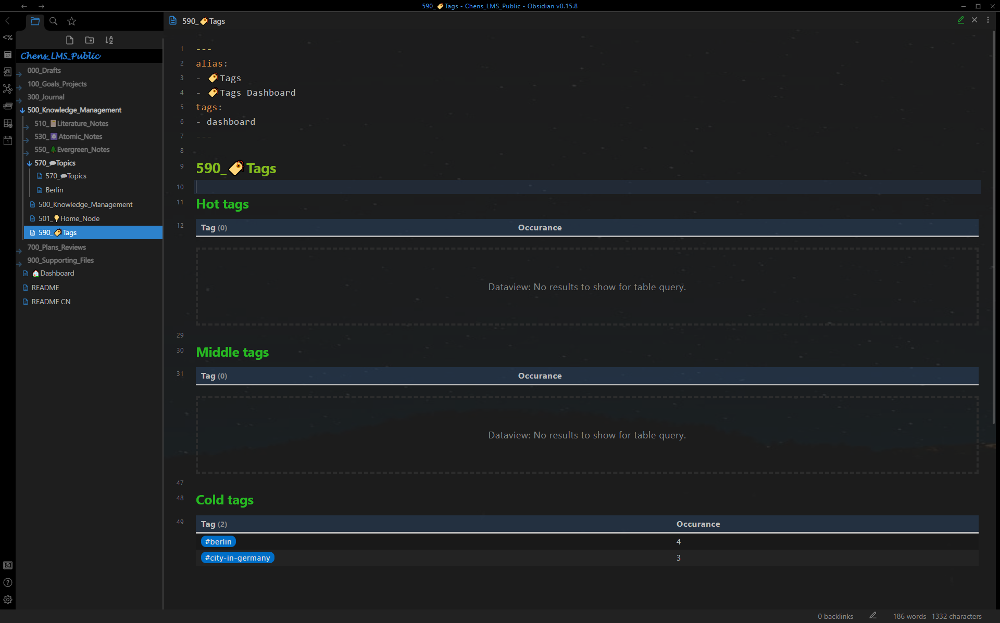

Show Case - Knowledge Management
Knowledge Management Dashboard
Knowledge management dashboard with literature notes and evergreen notes for spaced repetition 1

Knowledge management dashboard with final reviewed high-score notes

Literature Note
Literature note dashboard (left panel) with a literature note (right panel).
Dashboard: Notes are shown in different sections depending on reviews (captured, interim reviewed, final reviewed)
Literature note: With yalm front matter, all related notes (context-aware resurfacing 2). body text processed with progressive summarization.

Atomic Note
Atomic note dashboard (left panel) with an atomic note (right panel).
Dashboard: Notes are shown in different sections depending on the category
Atomic note: With yalm front matter, and the notes mentioning it.

Evergreen Note
Evergreen note dashboard (left panel) with an evergreen note (right panel).
Dashboard: Notes are shown in different sections depending on reviews (captured, interim reviewed, final reviewed)
Evergreen note: With yalm front matter, all related notes(context-aware resurfacing 2) and the notes mentioning it.

Topic Note
Topic note dashboard (left panel) with a topic note (right panel).
Dashboard: Notes are shown in different sections depending on scores and relations to value goals.
Topic note: With yalm front matter, all not processed related notes (consolidation helper 3) and summary of the topic.

Home Node
All top-level topics are connected to the home node, for easier navigation.

Tag
Tag dashboard

-
Spaced repetition: The note will be shown automatically on the dashboards "510_📔Literature_Notes"/"550_🌲Evergreen_Notes" and "500_Knowledge_Management" after a certain period for the review, depending on the score, reviewed and last-review in the front matter. ↩
-
Context-aware resurfacing: The note will be resurfaced automatically while editing literature notes, evergreen notes and topic notes with the same tag. ↩↩
-
Consolidation helper: All notes with the related tag are shown below Not Processed. The notes will be no more list below Not Processed, as soon as they are referenced by the topic (using outlink). ↩